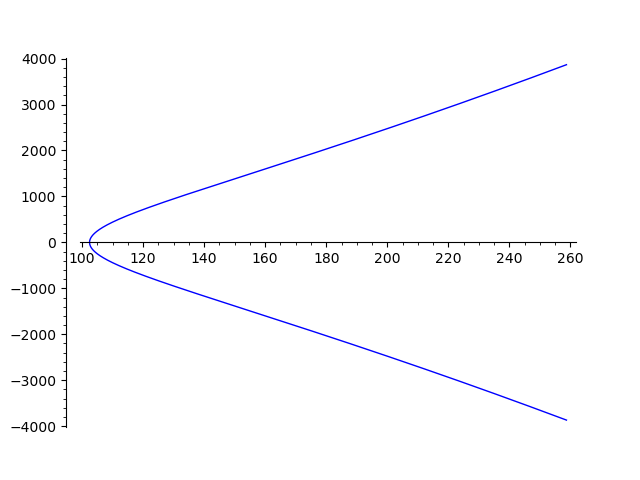
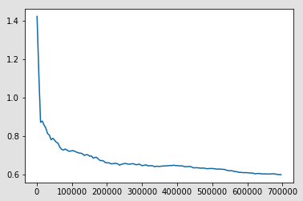
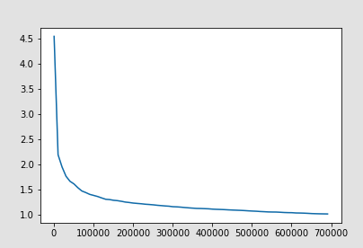

Vanishing of quartic twists of
L-Functions of elliptic curves:
experiments and conjectures
JMM Special Session on Rethinking Number Theory
January 2023
Jen Berg
Bucknell University
Nathan Ryan
Bucknell University
Matt Young
Texas A&M University
This work was primarily completed in Lewisburg, PA.
I would like to respectfully acknowledge and recognize my responsibility to the original and current caretakers of this land, water, and air: the Susquehannock peoples and their ancestors and descendants.
Visit native-land.ca to learn more about the native lands on which you live and work
Rethinking Number Theory
One of the goals of RNT is to have joyful, affirming research experiences — ones in which people can be their whole selves.
I think about this every time I engage with scholarship.
Am I enjoying this? Do I belong here? Is everyone valued?
Outside of RNT, the answers are often still no. We can do better.
The math I'll discuss today was born from a desire to collaborate with Nathan on a fun, computational project that combined our interests. Along the way, our many questions led us to Matt whose insights provided a helpful and exciting narrative.
L-functions: What and why?
Let $E$ be an elliptic curve over $\mathbb{Q}$.
Example: The curve 11.a1 has equation $y^2=x^3-10135152x-12419196912$
Often want to study arithmetic of $E$ and, in particular, gain info about $\small E(\mathbb{Q})$
The L-function associated to $E$ is the Euler product$\small ^\ast$
\[ \small L(E,s) = \prod_p \frac{1}{1 - a_p p^{-s} + p^{1-2s}} = \sum_{n \ge 1} \frac{a_n}{n^s}\]
- $a_p$ encode info about $\#E(\mathbb{F}_p)$, the number of points of $E$ mod $p$
- has analytic continuation to $\mathbb{C}$
- satisfies functional equation relating $\small L(E,s)$ and $\small L(E,2-s)$
$^\ast$ ignoring primes $p$ of bad reduction for simplicity
So the $L$-function $L(E,s)$ of an elliptic curve $E/\mathbb{Q}$ packages local information about $E$ into a global object.
The Birch and Swinnerton Dyer Conjecture (BSD) predicts that vanishing of $L(E,s)$ at $s=1$ implies $E$ has infinitely many $\mathbb{Q}$-rational points.
Generalizations: Points over number fields
Given $E/\mathbb{Q}$ and a Dirichlet character $\chi \colon \mathbb{Z} \to \mathbb{C}$, we can form the twisted $L$-function
\[ \small L(E,s,\chi) = \sum_{n \ge 1} \frac{\chi(n) a_n}{ n^{s}} \]
$L(E,s,\chi)$ also has an analytic continuation to $\mathbb{C}$ and satisfies a functional equation relating $L(E,s,\chi)$ and $L(E,2-s, \overline{\chi})$.
BSD predicts (order of) vanishing of $\small L(E,s,\chi)$ at $s=1$ is related to the rank of $\small E(K)$ over the abelian extension $\small K/\mathbb{Q}$ associated to $\small \chi$.
Theme: Interesting arithmetic data is encoded in the location of the zeroes (and poles) of L-functions. Since L-functions are analytic objects, one can use analytic tools to study arithmetic.
Dirichlet Characters
A Dirichlet character is a function $\chi \colon \mathbb{Z} \to \mathbb{C}$ together with a positive integer $d$ called the modulus, such that for all integers $a,b$
- $\chi(ab) = \chi(a) \chi(b)$ completely multiplicative
- $\chi(a + d) = \chi(a)$ periodic
- $\chi(a) \ne 0$ iff $\gcd(a,d) = 1$
These imply $\chi(a)$ is a root of unity if $\gcd(a,d) = 1$.
LMFDB Dirichlet characters database

Example
The character $\chi$ with LMFDB label 65.k.8 has modulus $d = 65$.
The first few values on integers $a$ with $\gcd(a,65) = 1$ are
| \(a\) | \(-1\) | \(1\) | \(2\) | \(3\) | \(4\) | \(6\) | \(7\) | \(8\) | \(9\) | \(11\) | \(12\) | \(14\) |
| \( \chi(a) \) | \(1\) | \(1\) | \(1\) | \(i\) | \(1\) | \(i\) | \(-1\) | \(1\) | \(-1\) | \(-i\) | \(i\) | \(-1\) |
The order of $\chi$ is $4$ and we say $\chi$ is a quartic character.
Vanishing of twisted L-functions
GOAL: Given an elliptic curve $\small E/\mathbb{Q}$, study the vanishing of twisted L-functions for families of Dirichlet characters $\chi$ to gain arithmetic info about $E$.
Conjectures
Conjecture (David, Fearnley, Kisilevsky; 2007)
Let $\small E/\mathbb{Q}$ be an elliptic curve. There are infinitely many primitive Dirichlet characters $\small \chi$ of order $\small 3$ and $\small 5$ (ordered by conductor) such that $\small L(E,1,\chi) = 0$. However, if $\small k \ge 7$ is prime, there are only finitely many $\small \chi$ of order $k$ such that $\small L(E,1,\chi) = 0$.
Conjecture (Berg, Ryan, Young; 2022)
Let $\small E/\mathbb{Q}$ be an elliptic curve. There are infinitely many primitive Dirichlet characters $\chi$ of order $\small 4$ or $\small 6$ such that $\small L(E,1,\chi) = 0$.
The functional equation for the twisted L-function by a character $\small \chi$ is \[ \small L(E,s,\chi) = \varepsilon \, L(E,2-s,\overline{\chi}),\] where the sign $\varepsilon$ is a complex number depending on $E$ and $\chi$.
When $\chi$ is a quadratic character (order 2), $\chi = \overline{\chi}$ and moreover the sign $\varepsilon = \pm{1}$. In that case, $\small \varepsilon \ne 1$ forces $L(E,1,\chi) = 0$.
When $\chi$ has order $\small \ge 3$, it may be that $\chi \ne \overline{\chi}$. Now, when $\varepsilon \ne 1$ it is not enough to guarantee vanishing of $L(E,1,\chi)$.
Random Matrix Theory
One fruitful approach via Katz and Sarnak is to model such L-functions by a suitable classical (compact) matrix/symmetry group (unitary, orthogonal, symplectic,...)
In this context, the symmetries of the family of L-functions determine the appropriate group of matrices; the sign $\varepsilon$ of the functional equation is analogous to the determinant of the matrix
(unitary: $\small |\det| = 1$, orthogonal: $\small \det = \pm 1$, symplectic: $\small \det = 1$)
Many properties of twisted L-functions are analogous to those of characteristic polynomials of unitary$\small ^\ast$ matrices.
Keating and Snaith conjectured that the distribution of zeroes close to $\small s=1$ of a family of twisted L-functions is related to the distribution of eigenvalues close to 1 of random unitary matrices.
$^\ast$A matrix $U$ is unitary if $U^{-1}$ is equal to the conjugate transpose of $U$.
To use random matrix theory model to predict number of vanishings, we need to know
- the symmetry type is unitary
- a discretization of the central values $\small L(E,1,\chi)$
Conjectures
Conjectures
Conjecture (David, Fearnley, Kisilevsky; 2007)
Let $\small E/\mathbb{Q}$ be an elliptic curve. There are infinitely many primitive Dirichlet characters $\small \chi$ of order $\small 3$ and $\small 5$ (ordered by conductor) such that $\small L(E,1,\chi) = 0$. However, if $\small k \ge 7$ is prime, there are only finitely many $\small \chi$ of order $k$ such that $\small L(E,1,\chi) = 0$.
Conjecture (Berg, Ryan, Young; 2022)
Let $\small E/\mathbb{Q}$ be an elliptic curve. There are infinitely many primitive Dirichlet characters $\chi$ of order $\small 4$ or $\small 6$ such that $\small L(E,1,\chi) = 0$.
Ingredients and distinguishing features
Experiments and Data
Totally quartic case

Ratio of predicted vanishings to emperical vanishings of twisted L-functions of the curve 11.a1 by totally quartic characters $\small \chi$ of conductor $\small \le 700000$
All quartic case

Ratio of predicted vanishings to emperical vanishings of twisted L-functions of the curve 11.a1 by primitive quartic characters $\small \chi$ of conductor $\small \le 700000$
All sextic case

Ratio of predicted vanishings to emperical vanishings of twisted L-functions of the curve 11.a1 by primitive sextic characters $\small \chi$ of conductor $\small \le 200000$